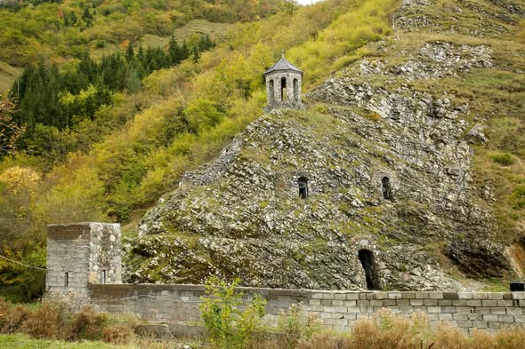
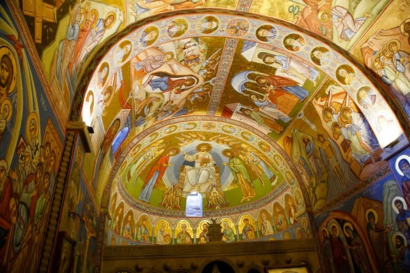
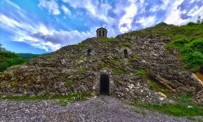

უნიკალური ძეგლი
სარკინეთის წმინდა შიო მღვიმელის სახელობის ტაძარი თანამედროვეობის ერთ-ერთი ყველაზე შთამბეჭდავი ნაგებობაა. იგი მთლიანად კლდეშია გამოკვეთილი და იმეორებს ძველი ქართული კლდეში ნაკვეთი არქიტექტურის ტრადიციებს. ტაძრის შიგნით სუფევს განსაკუთრებული აკუსტიკა და სიგრილე, რაც ლოცვისთვის იდეალურ გარემოს ქმნის.



⚠️ მნიშვნელოვანი ინფორმაცია
⛪ მოქმედი ტაძარი
შესვლისას აუცილებელია სიმშვიდის დაცვა და შესაბამისი სამოსი.
🌡️ ტემპერატურა
ტაძრის შიგნით კლდის გამო ყოველთვის გრილა, წამოიღეთ მსუბუქი მოსაცმელი.
🚗 მდებარეობა
მდებარეობს სოფელ სარკინეთში, ასფალტირებული გზიდან სულ რაღაც 2 წუთის სავალზე.
🚶 სირთულე
ძალიან მარტივი. ტაძრამდე მისასვლელად კიბეებია მოწყობილი.